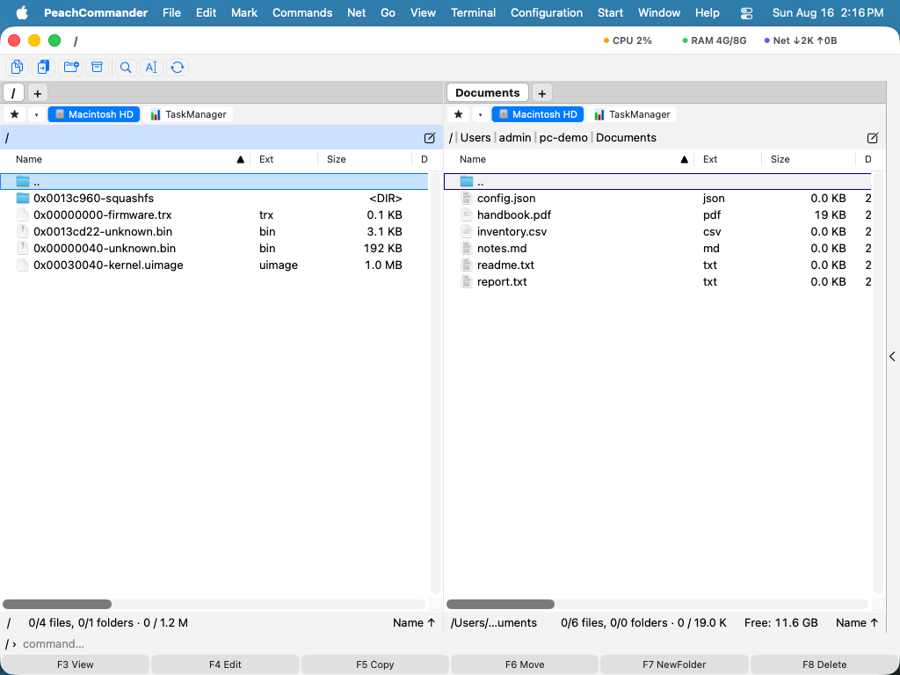

파일 시스템 이미지
파일 시스템 이미지는 파일 시스템 전체가 담긴 파일입니다 — 라우터 업데이트의 rootfs, 바이트 단위로 복사한 SD 카드, 조사 중인 기기의 이미지 등입니다. Linux Filesystem Images 플러그인은 Peach Commander가 압축 파일을 여는 것과 같은 방식으로 이를 엽니다. 커서를 올리고 Enter를 누르면 패널이 파일 시스템 안에 들어갑니다. 그 다음부터는 뷰어, 검색, 복사가 폴더에서와 똑같이 동작합니다.
이미지에는 결코 쓰지 않습니다. 이 플러그인은 읽기만 할 수 있습니다.
먼저 켜십시오
플러그인은 꺼진 상태로 제공됩니다. 설정 ▸ 플러그인을 열고 Linux Filesystem Images를 찾아 켜십시오.
기본으로 꺼져 있는 것은 이미지를 찾는 방식 때문입니다. 펌웨어는 이름이 단정한 경우가 드뭅니다 — 찾는 파일이 firmware.bin, rootfs.img, 또는 그냥 dump인 경우가 .squashfs인 경우 못지않게 많습니다 — 그래서 확장자가 아무것도 말해 주지 않으면 플러그인은 앞부분 바이트를 보고 판단합니다. 기기 이미지를 다룬다면 바로 그것이 필요하고, 그렇지 않다면 쓸데없는 일입니다. 켜는 것이 둘 중 어느 쪽인지 말하는 방법입니다.
이미지가 아닌 것으로 밝혀진 파일은 그 한 번의 확인 뒤 그대로 남고, 늘 그랬듯이 열립니다.
열 수 있는 것
| 형식 | 어디서 만나게 되는지 |
|---|---|
| SquashFS | 거의 모든 라우터·카메라·셋톱박스 펌웨어 안의 rootfs |
| ext2, ext3, ext4 | 대부분의 임베디드 리눅스 기기의 주 파티션 |
| Btrfs | NAS 볼륨과 최신 리눅스 시스템, 스냅샷 포함 |
| JFFS2, UBIFS | 구형 및 현행 임베디드 하드웨어의 원시 플래시 |
| cramfs, initramfs | 부트 파일 시스템과 오래 쓰이는 구형 기기 |
| FAT12, FAT16, FAT32 | SD 카드, USB 메모리, 그리고 모든 최신 PC의 EFI 파티션 |
| exFAT | SD 카드와 32 GB를 넘는 드라이브 |
| NTFS | 윈도우 볼륨, 압축된 파일 포함 |
파티션이 여러 개인 디스크 이미지
기기 전체에서 복사한 이미지에는 보통 단일 파일 시스템이 아니라 파티션 테이블이 있습니다. 그런 이미지는 파티션마다 폴더 하나로 열리며 — 1-rootfs, 2-esp — 원하는 쪽으로 들어가면 됩니다. MBR과 GPT 테이블을 모두 읽고, 테이블에 파티션 이름이 기록되어 있으면 그 이름을 사용합니다.
플러그인이 읽지 못하는 파티션도 종류를 이름으로 삼은 빈 폴더로 표시됩니다. 기기에 파티션이 셋 있다면, 셋이 있다는 사실은 보여야 합니다.
파티션 테이블이 없는 펌웨어
라우터나 카메라에서 빼낸 펌웨어 파일에는 대개 파티션 테이블이 전혀 없습니다. 제조사 헤더, 부트로더, 커널, 루트 파일 시스템이 어디에도 기록되지 않은 오프셋에 차례로 쓰여 있을 뿐입니다. 그런 파일은 부분마다 한 항목씩 열리며, 각 항목은 시작하는 오프셋으로 이름이 붙습니다. 0x00230044-squashfs는 들어가 볼 수 있는 파일 시스템이고, 0x00030040-kernel.uimage는 복사해 낼 수 있는 파일입니다.

각 부분은 파일에서 파일 시스템 자체를 찾은 다음 찾은 위치마다 실제로 열어 보아 정말 있는지 확인하는 방식으로 발견됩니다. 우연히 일치한 바이트 패턴은 잠깐의 비용만 들이고 버려지며 지어낸 항목이 되지 않습니다. 또한 파일 시스템이 전혀 없는 파일은 여전히 거절되어 늘 그랬던 대로 열립니다.
파티션이 있는 이미지에서 파티션 바깥에 놓인 것에도 같은 원칙이 적용됩니다. 라즈베리 파이는 부트로더를 파티션 1 앞의 몇 메가바이트에 두고, 대부분의 ARM 보드에서 U-Boot는 같은 미할당 공간의 고정된 오프셋에 자리합니다. 그런 구간은 파티션과 나란히 표시되므로 확인하고 복사해 낼 수 있습니다.
구조를 기록해 두기
명령 ▸ 이미지 구조 분석… 은 분석 결과를 이미지 옆에 텍스트 파일로 저장하고 그 파일에 커서를 놓습니다. 각 영역의 오프셋과 크기, 무엇으로 밝혀졌는지가 담기고, 이미지에 파티션 테이블이 있으면 그것도 함께 담깁니다. 분해 기록이나 티켓에 실제로 필요한 것이 대개 이 표이며, 패널을 돌아다니며 숫자를 손으로 옮겨 적어 다시 만드는 일은 번거롭습니다.
보고서에는 패널이 생략하는 것도 나옵니다. 예를 들어 파티션 사이의 작은 정렬 간격이 그렇고, 이미지에 기록되어 있다면 U-Boot 커널이 어느 보드용으로 빌드되었는지도 알려 줍니다.
이미지 안에서 작업하기
이미 알고 있는 모든 것이 그대로 적용됩니다. F3으로 파일을 보고, F5로 실제 폴더에 파일을 복사하고, 파일 찾기로 이미지 내용을 검색합니다. 나올 때는 압축 파일에서 나오듯이 하면 됩니다.
심볼릭 링크는 이름과 함께 표시되며, 바깥으로 복사하면 실제 링크가 아니라 링크의 대상이 담긴 작은 텍스트 파일이 만들어집니다 — 이미지가 사용자 디스크의 아무 곳이나 가리키는 링크를 놓게 둘 수는 없습니다.
이미지가 열리지 않을 때
플러그인은 손상된 파일이라고 알리는 대신 이유를 말해 줍니다. 둘은 서로 다른 곳으로 이어지기 때문입니다.
- RAID0, RAID10, RAID5, RAID6을 쓰는 Btrfs 볼륨이거나 여러 기기에 걸친 볼륨. 데이터가 여러 디스크에 흩어져 있어 대부분이 지금 가진 파일 안에 없습니다.
- 예비 영역이 아직 들어 있는 원시 NAND 덤프. 이미지 자체는 멀쩡하며, 오류 정정 바이트까지 함께 복사되었을 뿐입니다.
nanddump --omitoob로 다시 복사하십시오. - 암호화된 ext4 또는 NTFS 볼륨 — 키 없이는 읽을 수 없습니다.
- 깨끗하게 분리되지 않은 ext 파일 시스템도 열리지만, 루트 맨 위에 내용이 오래되었을 수 있다는 표시 항목이 함께 나옵니다. 사용 중에 복사된 파일 시스템이며, 최신 변경 사항은 이 플러그인이 재생하지 않는 저널에 있습니다. 세부가 중요하다면 사본에
e2fsck를 실행하십시오.
참고
- 이미지는 한 번 읽고 기억되므로 다시 들어가는 것은 즉시 이루어집니다.
- 아주 큰 이미지는 통째로 불러오지 않고 필요할 때마다 읽습니다. 목록은 이백만 항목으로 제한됩니다.
- 이미지에서 내장 파일 시스템을 찾는 검색은 파티션 테이블도 없고 시작 부분에 파일 시스템도 없을 때에만 이루어지므로, 보통의 이미지는 예전과 똑같이 빠르게 열립니다.
- 이 플러그인은 메뉴 명령 하나를 추가하며, 켜고 끄는 스위치 외에 자체 설정은 없습니다.